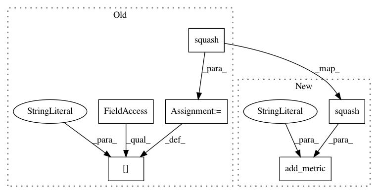

e0a1faaba8f426fec9b9adf6c348a252eae3feb2,hypergan/losses/base_loss.py,BaseLoss,create,#BaseLoss#,26
Before Change
return m
l2nn_penalties.append(tf.minimum(_l(wtw), _l(wwt)))
l2nn_penalty = self.config.l2nn_penalty * tf.add_n(l2nn_penalties)
self.metrics["l2nn_penalty"] = self.gan.ops.squash(l2nn_penalty)
l2nn_penalty = tf.tile(l2nn_penalty, [self.gan.batch_size(), 1])
d_regularizers.append(l2nn_penalty)
if config.ortho_penalty:
After Change
return m
l2nn_penalties.append(tf.minimum(_l(wtw), _l(wwt)))
l2nn_penalty = self.config.l2nn_penalty * tf.add_n(l2nn_penalties)
self.add_metric("l2nn_penalty", self.gan.ops.squash(l2nn_penalty))
l2nn_penalty = tf.tile(l2nn_penalty, [self.gan.batch_size(), 1])
d_regularizers.append(l2nn_penalty)
if config.ortho_penalty:
In pattern: SUPERPATTERN
Frequency: 3
Non-data size: 6
Instances
Project Name: HyperGAN/HyperGAN
Commit Name: e0a1faaba8f426fec9b9adf6c348a252eae3feb2
Time: 2018-10-05
Author: mikkel@255bits.com
File Name: hypergan/losses/base_loss.py
Class Name: BaseLoss
Method Name: create
Project Name: HyperGAN/HyperGAN
Commit Name: 5b51ee79163b48fec4341b1cf4865a35859310c0
Time: 2018-11-18
Author: martyn@255bits.com
File Name: hypergan/losses/base_loss.py
Class Name: BaseLoss
Method Name: create
Project Name: HyperGAN/HyperGAN
Commit Name: 665b622430b0c77ad4bfe2c6ff6d07972ed9b52d
Time: 2018-12-03
Author: mikkel@255bits.com
File Name: hypergan/losses/base_loss.py
Class Name: BaseLoss
Method Name: create